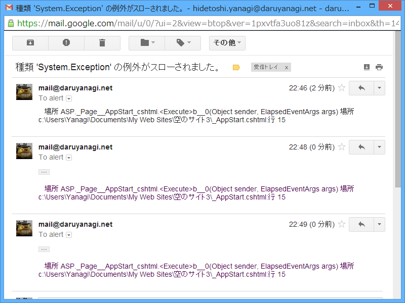

WebMatrix: Gmail 経由でアラートメールを送る（2）
公開日：
見事 WebMatrix で Gmail 経由のアラートメールが送れたわけだが（WebMatrix: Gmail 経由でアラートメールを送る - だるろぐ）、このやり方には一つ欠点（？ というか、仕様だな）があった。
たとえば、以下のようなコード。タイマーでとあるジョブ（必ず失敗する）を処理し、エラーが発生したらエラーメールを送る。
@{
WebMail.SmtpServer="smtp.gmail.com";
WebMail.SmtpPort = 587;
WebMail.EnableSsl=true;
WebMail.UserName="***";
WebMail.From="***@gmail.com";
WebMail.Password="***";
var timer = new System.Timers.Timer(1000 * 60);
timer.Elapsed += (sender, args) =>
{
try
{
throw new Exception();
}
catch (Exception e)
{
WebMail.Send("@.com", e.Message, e.StackTrace);
}
};
timer.Start();
}
これは失敗する。しかも、WebMatrix だと例外が捕捉できないので気づきにくい。

よくわからんけれど、WebMail は System.Web.Helpers Namespace () | Microsoft Docs に属するみたいで、Page のスレッドじゃないと動作しないのかもしれない。そういえば昔、こういうシチュエーションで Server.MapPath() が使えなかった覚えがある。
解決策
System.Net.Mail.MailMessage と System.Net.Mail.SmtpClient を使ってみた。
@{
var timer = new System.Timers.Timer(1000 * 60);
timer.Elapsed += (sender, args) =>
{
try
{
throw new Exception();
}
catch (Exception e)
{
SendMail(e.Message, e.StackTrace);
}
};
timer.Start();
}
@functions
{
public void SendMail(string title, string body)
{
using (var mail = new System.Net.Mail.MailMessage())
using (var smtp = new System.Net.Mail.SmtpClient())
{
try
{
mail.From = new System.Net.Mail.MailAddress("@.com");
mail.To.Add(new System.Net.Mail.MailAddress("@.com"));
mail.Subject = title;
mail.Body = body;
smtp.Host = "smtp.gmail.com";
smtp.Port = 587;
smtp.EnableSsl = true;
smtp.UseDefaultCredentials = false;
smtp.Credentials = new System.Net.NetworkCredential("", "");
smtp.Send(mail);
System.Diagnostics.Debug.WriteLine("The mail has been sent successfully.");
}
catch(Exception e)
{
System.Diagnostics.Debug.WriteLine(e.Message);
}
}
}
}
これは成功。

成功したのはいいけどアプリを止め忘れて、気が付いたら 100 通以上メールがきてた ／(＾o＾)＼